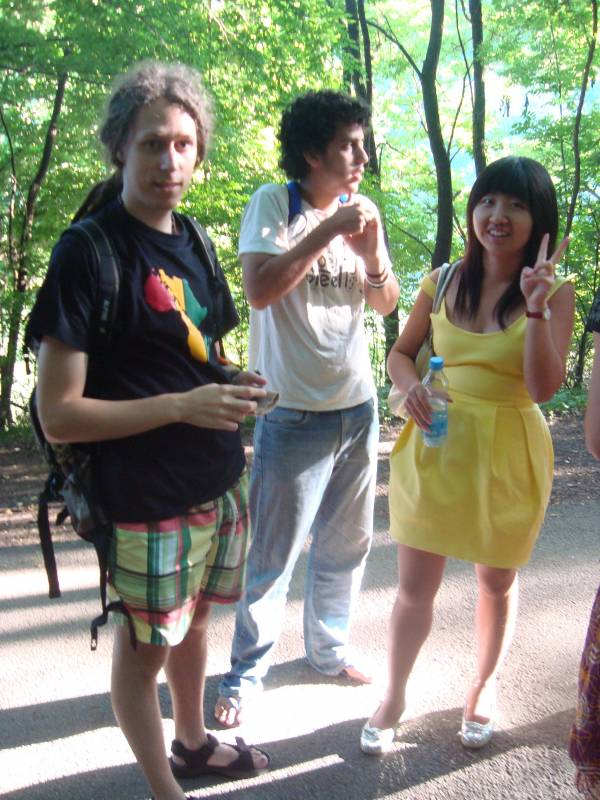
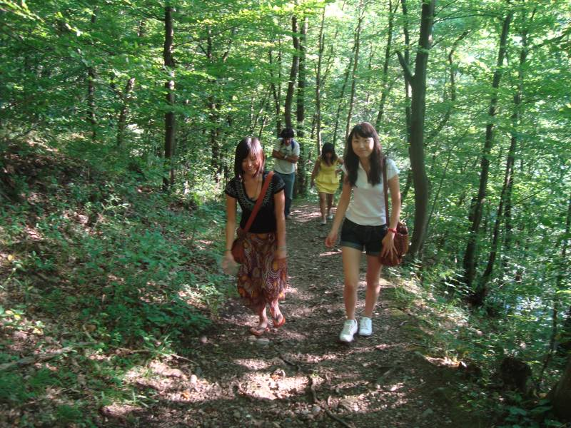
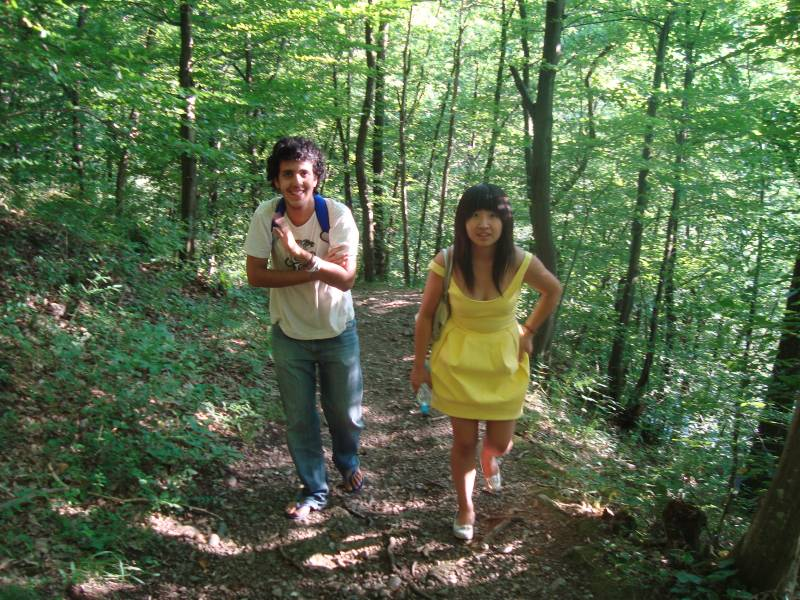
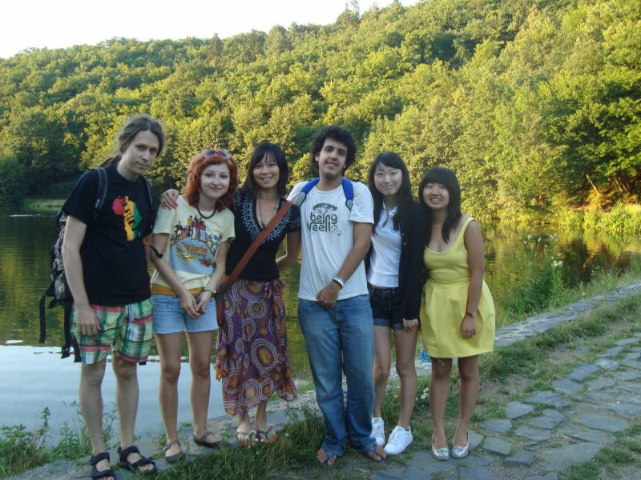

Tak nám odjela poslední kamarádka z první a nejlepší Erasmácké party - Mendy :_(. Bude nám chybět hlavně proto, že jako jediná z našich Erasmus kamarádů se za ten rok strávený v Brně naučila velice dobře česky. Bude se mi moc stýskat po jejím “Mám otázku!” a “Dóbře” :-)… Přináším zde alespoň krátký report z naší poslední společné akce - výletu do Mariánského údolí. Přes počáteční organizační komplikace jsme se v počtu šesti kusů úspěšně dopravili autobusem až na konečnou - do vyhlášené brněnské rekreační zóny :-). Zde jsme si užili příjemný kešovací podvečer (byli jsme tentokrát v hledání stoprocentně úspěšní, k veliké radosti nás i Erasmáků :D) a překonávali jsme se ctí nepříznivý terén navzdory nevhodné obuvi většiny účastníků :D. Když jsme se celí promrzlí a vyhladovělí vrátili zpátky na zastávku, rozhodli jsme se završit příjemný den v nějaké dobré hospůdce a pořádně se nadlábnout. Vzali jsme proto Erasmáky do stejkáče Pod lékárnou a nacpali je i sebe žebrama :-). Výlet jsme zakončili srdceryvným loučením na zastávce před výstavištěm. Tak ahoooj na Taiwanu :-)!!!
A teď trocha fotodokumentace. Většina fotek byla bohužel rozmazaná nebo jinak nekvalitní, ale jde přece o ty zážitky, že :-)!

Vydáváme se za první keškou…

Mendy a Hyemin se drápou do kopce :)

Luiz a Hanwei

A jedna skupinová :-)
A úplně nazávěr bych pro vás měla video, které Mendy natočila o svém pobytu v Brně. Je moc vydařené, tak na něj určitě mrkněte :-)!
Komentáře (2)
Komentáře jsou uzavřené.